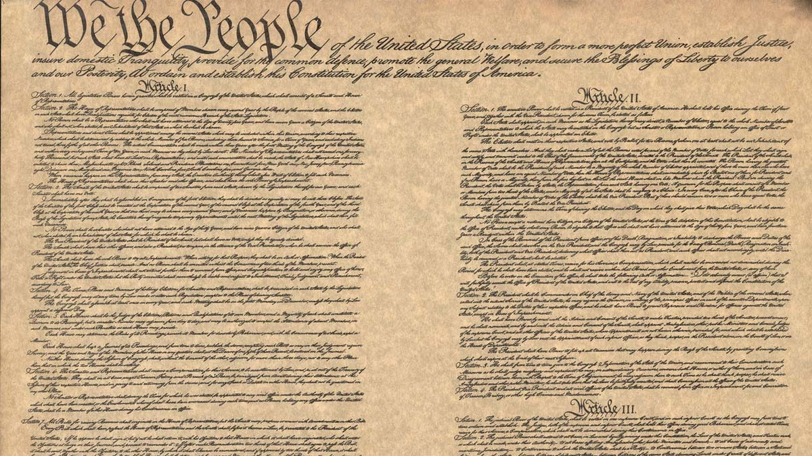
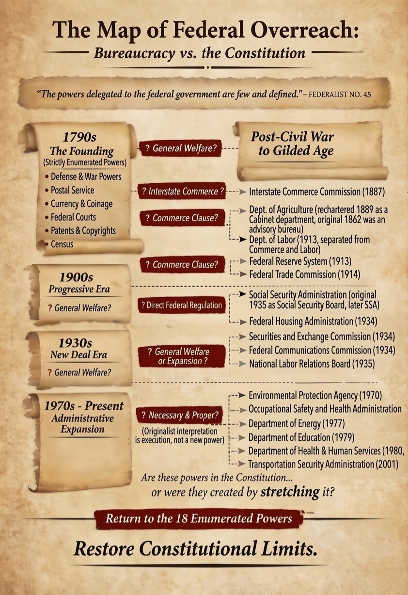
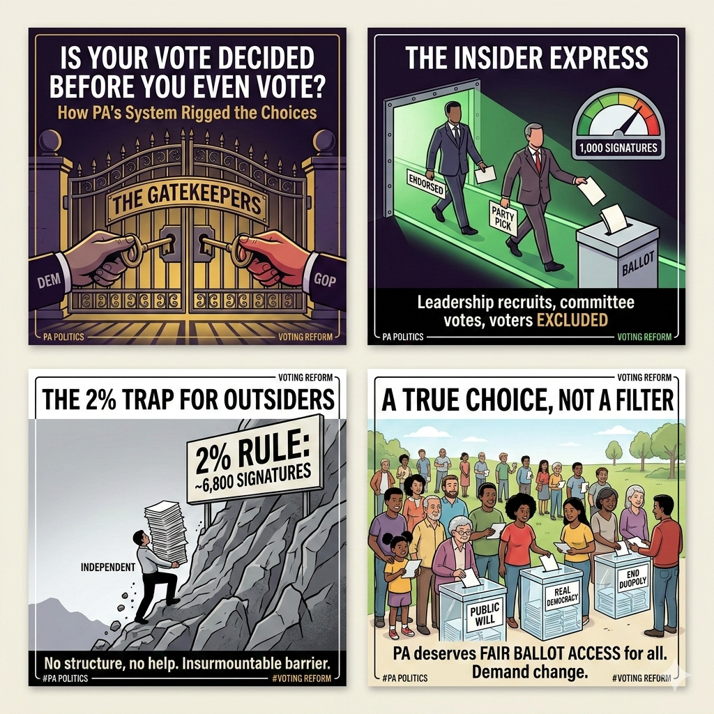
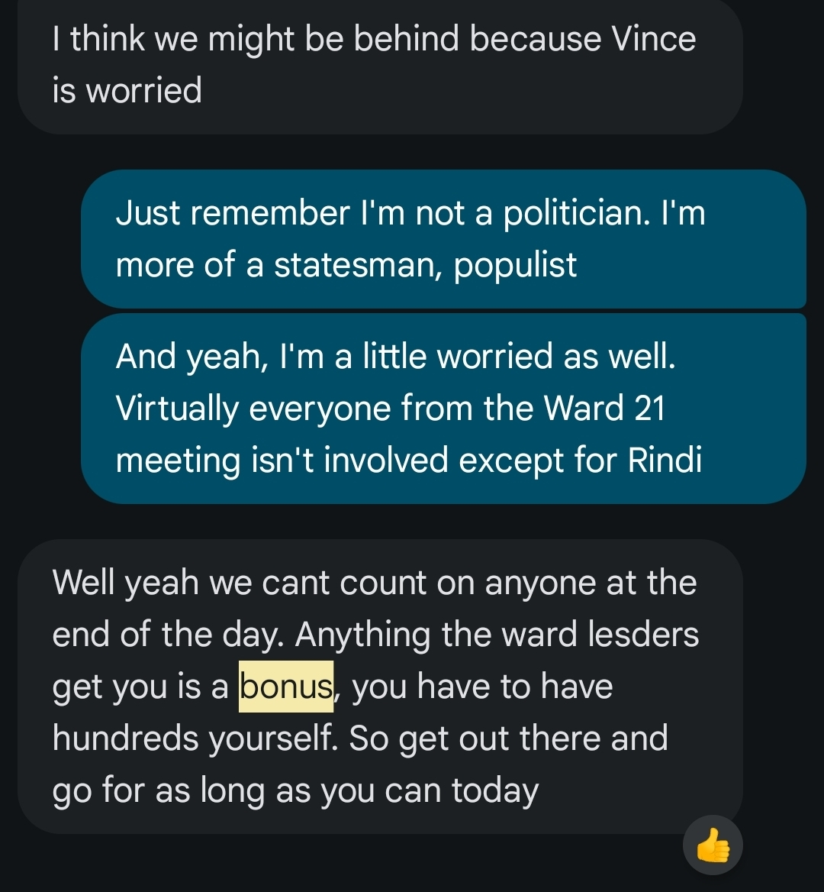
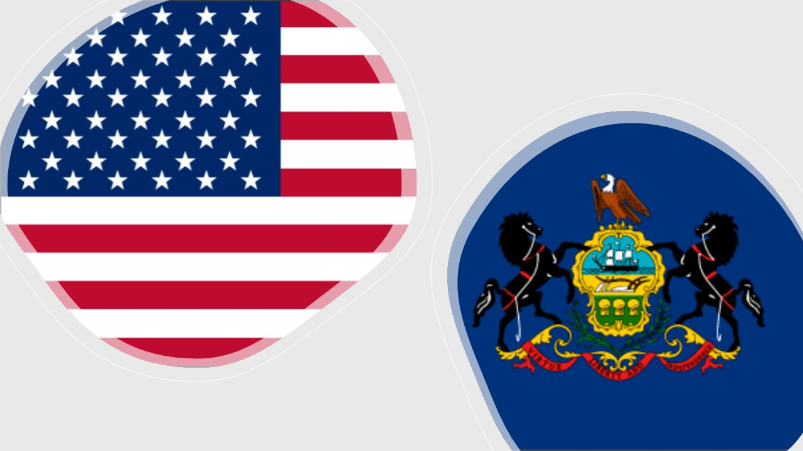

A Constitutional Framework for Representation
The Constitution protects people from unaccountable power. It keeps decisions close to the public and sets clear limits on what the federal government may do. That is the standard I use when representing you.
I consider myself a Constitutionalist. I believe Congress must stay within the limits the Constitution provides. These limits are the foundation for a government that is accountable, affordable, and focused on its core responsibilities.
James Madison described this clearly in Federalist No. 45: “The powers delegated by the proposed Constitution to the federal government are few and defined. Those which are to remain in the State governments are numerous and indefinite.” That principle guided the design of our system, and it remains essential for effective self-government.
Article I, Section 8 lists the powers of Congress. These are grants of authority and also limits. Each power has a specific meaning rooted in the founding era.
1) Lay and collect taxes, duties, imposts, and excises to pay debts and provide for the common defense and general welfare, applied uniformly across the United States
This allows Congress to raise revenue for national purposes. The spending must support the limited federal responsibilities listed in the Constitution.
2) Borrow money on the credit of the United States
This allows Congress to issue debt for legitimate federal functions. It does not authorize borrowing for programs outside the enumerated powers.
3) Regulate commerce with foreign nations, among the states, and with Indian tribes
The founding understanding of “commerce” referred to trade and exchange. It did not include manufacturing, agriculture, labor, or general economic activity. The power covers the handshake between parties across jurisdictional lines. It does not reach production or consumption inside a state.
4) Establish uniform rules of naturalization and bankruptcy
These rules must be uniform across the country. They do not authorize broader control over immigration policy or private financial management.
5) Coin money, regulate its value, and fix standards of weights and measures
This ensures a stable national currency and consistent measurements.
6) Punish counterfeiting of U.S. securities and coin
This protects the integrity of the national currency.
7) Establish post offices and post roads
This supports communication and national connectivity. It does not authorize general infrastructure programs.
8) Promote the progress of science and useful arts through patents and copyrights
This protects intellectual property for limited times. It does not authorize federal control over research, education, or industry.
9) Constitute tribunals inferior to the Supreme Court
This allows Congress to create federal courts for federal cases.
10) Define and punish piracies and felonies on the high seas and offenses against the law of nations
This covers crimes outside state jurisdiction and matters involving international law.
11) Declare war
This places the decision for war in the hands of the people’s representatives.
12) Raise and support armies, with appropriations limited to two years
This ensures civilian control and regular review of military funding.
13) Provide and maintain a navy
This supports national defense at sea.
14) Make rules for the government and regulation of land and naval forces
This governs the conduct and structure of the armed forces.
15) Provide for calling forth the militia to execute laws, suppress insurrections, and repel invasions
This allows temporary federal use of state militias for specific emergencies.
16) Provide for organizing, arming, and disciplining the militia
This sets standards for militia readiness while leaving appointment of officers to the states.
17) Exercise exclusive legislation over the federal district and federal enclaves
This covers the seat of government and federal properties.
18) Make all laws necessary and proper for carrying out these powers
This allows Congress to choose reasonable means to execute its listed powers. It supports the enumerated powers rather than expanding them.

From Federal Overreach to Local Gatekeeping: How the System Excludes the People
America was destroyed from within. The destruction began when the electoral process became a system of gatekeeping. Political parties operate as private clubs that handpick their candidates long before a single vote is cast. These organizations control the machinery of the ballot. They decide who gathers the necessary signatures. They determine who appears on the sample ballot. They manage the flow of funding.
The voter is excluded from this process until the primary election. By that point, the party presents a preselected choice. You are invited to approve their selection or walk away. You never truly choose your candidate.

The Realities of the Gauntlet
The corruption deepens through the influence of SuperPACs, lobbyists, and contributions from outside the jurisdiction. When a candidate receives support from any source other than individuals within the district they seek to represent, genuine representation disappears. The official becomes influenced by outside interests and corporate organizations rather than by the people of the community. A representative should answer only to the individuals they serve.
In states like Pennsylvania, the system uses short signature windows and closed primaries to stack the odds against the independent thinker. Candidates often have only a few weeks to gather signatures while competing against party-backed campaigns with established infrastructure. A statesman cares about the people. A politician is loyal to the party. To the politician, the people become tools used to advance a political agenda. Anyone who seeks to represent their neighbors must navigate this gauntlet, threading the needle while resisting the pressure to become part of the same corrupt structure.
I experienced this firsthand in my campaign for PA-3. By accounting for 17.3% of the campaign’s 266 signatures personally (46 signatures), I functioned as a highly effective individual operator but a dangerously overworked manager. Ward 9 alone produced 44.7% of all signatures (119 signatures), while the remaining twenty wards combined for just 147 signatures—an average of 7.35 each and 55.3% of the campaign’s total output. Individually, I produced more than six times the average ward output, effectively replacing the work of six committee members just to keep the campaign moving. At the current rate, the organization was operating at just 26.6% of the productivity required to reach the 1,000-signature ballot threshold. In practical terms, that meant a campaign supported by twenty-one wards was performing at the level of roughly five fully functioning ones.
The "Bonus" Mentality: Institutional Indifference
This internal collapse is even more damning because I was the officially endorsed candidate. In the local political ecosystem, an endorsement is supposed to be a mobilization of the party’s machinery. While three other ward leaders showed integrity by organizing events, and my own ward leader alongside our committee people acted with genuine dedication by personally knocking on doors to deliver nearly half of our progress, the vast majority of the organization remained paralyzed.
The success of this small handful of leaders proved that the 1,000-signature threshold was an achievable reality. It revealed that the silence of the remaining seventeen wards was not a logistical failure, but a strategic withdrawal. The party had granted me their name, but the gatekeepers withheld the very keys they promised would open the door to the ballot.
This disparity was less a failure of effort and more a product of institutional indifference. When I confronted the lack of support, the response from party leadership was a cold admission of the system’s design. I was told that any signatures gathered by ward leaders were simply a “bonus” and that I was expected to produce hundreds more on my own.
In any other professional organization, a logistics department treating the delivery of a product as an optional favor would be grounds for termination; in politics, it is a gatekeeping tactic. While some leaders were vacationing in Florida during the most critical week of the window and others prioritized the survival of their own committee seats, the candidate—the supposed voice of the neighborhood—was left to perform the labor of twenty wards alone. This “bonus” mentality proves that the party structure no longer exists to serve the candidate or the voter; it exists because the gatekeepers matter most.

Restoring the Enumerated Standard
This system persists because the Constitution is no longer followed as written. James Madison explained in Federalist No. 45 that “the powers delegated to the federal government are few and defined.” Today, politicians reinterpret clauses such as General Welfare, Commerce, and Necessary and Proper to justify authority that was never explicitly granted.
These powers are created by stretching the text rather than honoring its limits. The Constitution lists a defined set of enumerated powers. If Congress possessed general authority, the Framers would have had no reason to list specific ones. When legislation relies on implied authority instead of enumerated power, the oath to uphold the Constitution is no longer being honored.
Governing with Clear Limits and Practical Benefits
I will support legislation that fits within these enumerated powers. I will also support efforts to review, repeal, or return programs to states and local communities when they fall outside these limits.
The 10th Amendment confirms that powers not delegated to the federal government belong to the states or to the people. States and communities already manage education, environmental protection, healthcare access, and infrastructure. They do this with more flexibility and closer accountability than a distant federal agency can provide. Pennsylvania can tailor solutions to its own needs, including stronger rural schools and innovative clean energy projects in our region.
Respecting constitutional limits produces clear benefits:
- Responsible budgeting through a focus on authorized programs
- Clear priorities centered on defense, commerce, and individual rights
- Stronger communities with decision-making closer to the people
The Path to Restoration
Restoring constitutional self-government requires structural reform. First, we should return to the original proportional allocation of electoral votes that existed before the modern winner-take-all system. That structure worked alongside the Electoral College and reflected the political preferences of voters more accurately across each state.
Second, we must implement open primaries so that every voter within a jurisdiction can participate in selecting candidates. Candidate selection should belong to the people rather than to party organizations.
Finally, campaign contributions must be limited to individual residents within the candidate’s jurisdiction. Contributions from corporations, organizations, and individuals outside the district should be prohibited. A Social Security Number can serve as a valid identifier for an individual donor, while an Employer Identification Number identifies an organization and should therefore be excluded. Both identifiers should be invalid if they originate outside the jurisdiction.
These reforms restore a simple principle: representatives answer to the people who live in the community they serve. These changes—local, state, and federal—honor the Constitution's design: few and defined powers, accountable government, and power returned to the people and communities.
What This Means in Practice
- I read every bill through the lens of Article I, Section 8
- I oppose federal programs that belong at the state or local level
- I support reforms that increase transparency, accountability, and fiscal discipline

From Platform to Action
I want you to know my standards before I take office. You should be able to see how I apply them.